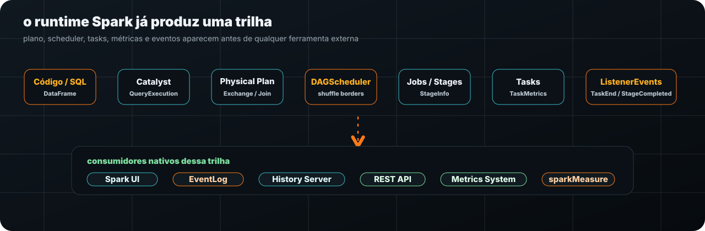
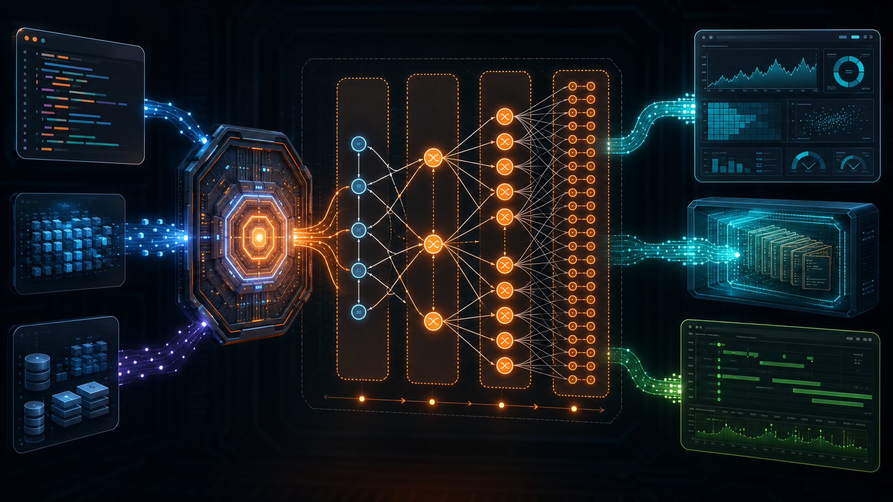
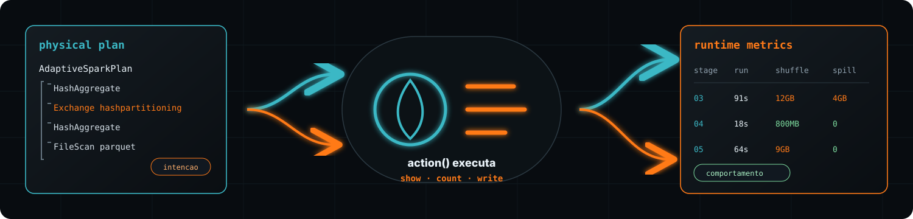
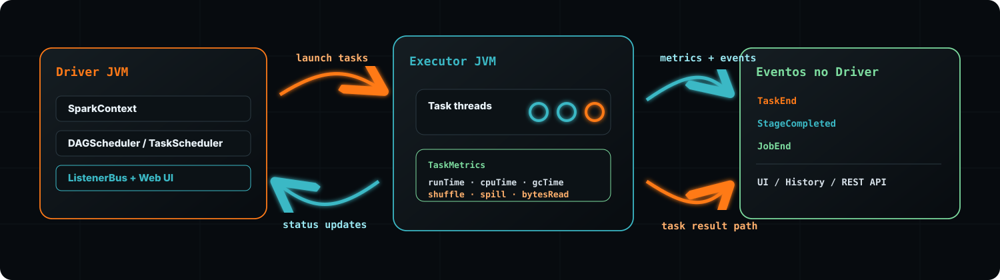
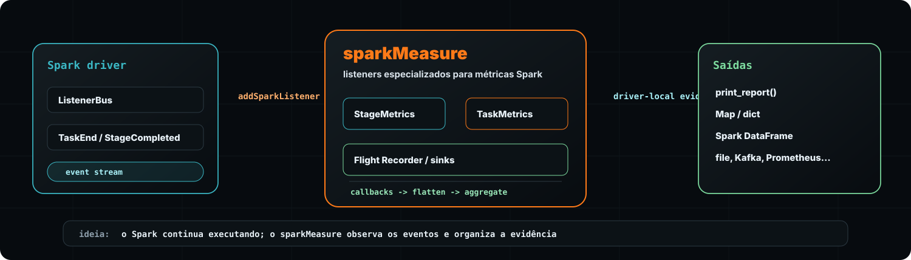
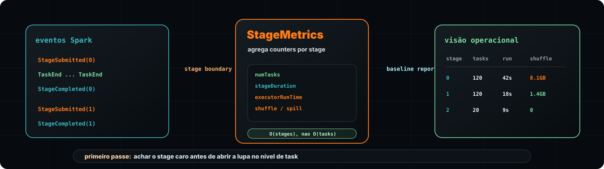
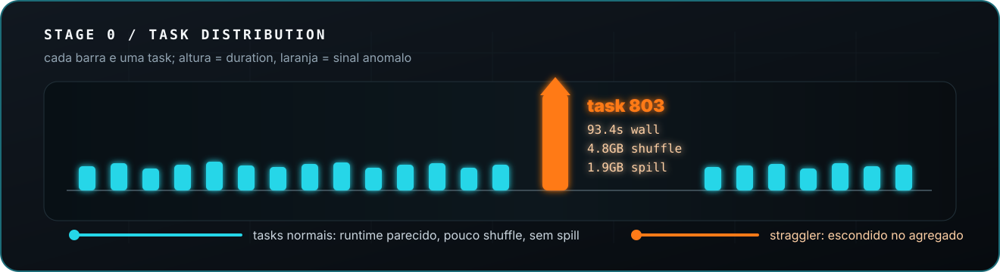
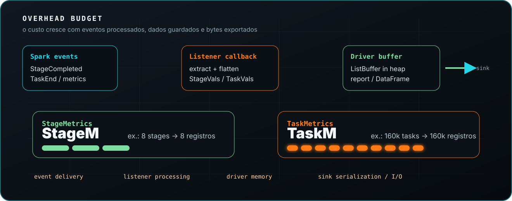
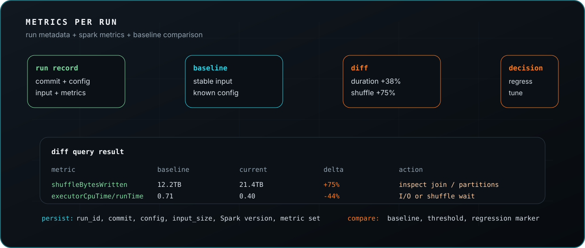

abrindo a caixa
Como o sparkMeasure funciona por dentro
from sparkmeasure import StageMetrics
stagemetrics = StageMetrics(spark)
stagemetrics.begin()
spark.sql("""
SELECT vendor_id, count(*)
FROM orders
GROUP BY vendor_id
""").show()
stagemetrics.end()
stagemetrics.print_report()- Spark SQLação dispara execução
- Schedulerjobs, stages e tasks
- ListenerBuseventos publicados
- sparkMeasurelistener especializado
- Diagnósticoreport, DataFrame, sink
| evento | sinal capturado | uso na leitura |
|---|---|---|
| SQLExecutionStart | executionId | amarra consulta à execução |
| StageCompleted | StageInfo | duracao, tasks, acumuladores |
| TaskEnd | TaskInfo + TaskMetrics | CPU, shuffle, GC, spill |
Se o Spark já emite sinais, o sparkMeasure entra como o tradutor que transforma execução distribuída em diagnóstico operacional.
recap técnico
Antes de medir, o Spark já deixa rastros
Spark UI available at http://driver:4040
spark.eventLog.enabled = true
spark.eventLog.dir = hdfs:///spark-logs
listener event stream:
JobStart -> StageSubmitted -> TaskStart
TaskEnd -> StageCompleted -> JobEnd
History Server replays the same event log later.

| camada | o que revela | sinal que aparece |
|---|---|---|
| Catalyst / QueryExecution | intenção de execução | logical plan, optimized plan, physical plan |
| DAGScheduler | quebra do trabalho distribuído | jobs, stages, fronteiras de shuffle |
| Executors / Tasks | custo real por unidade paralela | TaskInfo, TaskMetrics, acumuladores |
| SparkListenerEvents | linha do tempo observável | JobStart, StageCompleted, TaskEnd |
| UI / EventLog / History | materialização visual e histórica | Web UI, event log, replay posterior |
plano vs execucao
Plano mostra intenção. Métrica mostra comportamento.
O physical plan é a melhor hipótese executável do Spark. A execução real ainda pode revelar custo, pressão e anomalias que só aparecem no runtime.
== Physical Plan ==
AdaptiveSparkPlan isFinalPlan=false
+- HashAggregate(keys=[vendor_id#12], functions=[count(1)])
+- Exchange hashpartitioning(vendor_id#12, 200)
+- HashAggregate(keys=[vendor_id#12])
+- FileScan parquet orders
# O plano mostra operadores e estrategia.
# Ainda nao mostra custo real, spill, GC ou skew.- Schedulerquebra em jobs, stages e tasks
- AQEpode ajustar estrategia em runtime
- Executorsmaterializam custo real por task
| stage | tasks | runtime | cpu | shuffle | spill |
|---|---|---|---|---|---|
| 03 | 420 | 91s | 38s | 12GB | 4GB |
| 04 | 420 | 18s | 16s | 800MB | 0 |
| 05 | 420 | 64s | 22s | 9GB | 0 |
Spark registra esses sinais, mas eles aparecem espalhados entre UI, History Server, REST API e event log. Aqui estão consolidados para leitura.

runtime em eventos
Como o Spark transforma execução em eventos
A execução Spark é coordenada pelo driver, enquanto o custo real nasce nas tasks rodando em executors/JVMs. Processos internos do scheduler publicam eventos no driver; listeners inscritos recebem callbacks e enxergam o runtime sem executar as tasks.
driver
-> launch tasks
-> executor JVM
executor JVM
-> task status + TaskMetrics
-> driver
ListenerBus
-> Spark UI / EventLog
-> custom listeners
O driver mantém a operação em curso: agenda tasks, recebe heartbeats/status com métricas e, em falhas, o scheduler pode reexecutar tasks ou stages até os limites configurados.
| evento | payload principal | o que ajuda a responder |
|---|---|---|
| JobStart / JobEnd | jobId, stageIds, properties | qual ação abriu e fechou o trabalho |
| StageSubmitted | StageInfo | fronteira de shuffle, número de tasks e tentativa |
| TaskEnd | TaskInfo + TaskMetrics | runtime, CPU, shuffle, spill, GC e falhas por task |
| StageCompleted | StageInfo + acumuladores | resumo final do stage observado |
Listeners não são outro motor de execução: eles observam a linha do tempo que o próprio Spark publica no driver, conectando scheduler, executors, JVM e métricas de runtime.
o gancho
Onde o sparkMeasure entra no Spark
Ele não substitui scheduler, executor nem UI. Ele se registra no caminho de eventos do driver e transforma callbacks de runtime em evidência consultável.
SparkContext
-> addSparkListener(...)
-> StageInfoRecorderListener
TaskInfoRecorderListener
-> callbacks
-> ListBuffer no driver
-> report / Map / DataFrame / sink
| entrada nativa | camada sparkMeasure | saída prática |
|---|---|---|
| StageCompleted | StageMetrics | tempo, tasks, shuffle, spill e acumuladores por stage |
| TaskEnd | TaskMetrics | runtime, CPU, GC, I/O e shuffle por task |
| event stream | Flight Recorder | métricas persistidas para análise posterior |
O salto não é criar telemetria do zero: é transformar sinais nativos do Spark em uma superfície de diagnóstico que o engenheiro consegue comparar e reutilizar.
primeiro passe
StageMetrics: visão operacional barata
Antes de investigar cada task, vale descobrir qual stage concentrou custo. StageMetrics agrega eventos em nível de stage e entrega uma leitura rápida de baseline, regressão e gargalo inicial.
from sparkmeasure import StageMetrics
stage_metrics = StageMetrics(spark)
stage_metrics.begin()
orders.groupBy("vendor_id") \
.count() \
.write.mode("overwrite") \
.parquet(path)
stage_metrics.end()
stage_metrics.print_report()
metrics = stage_metrics.aggregate_stage_metrics()
# {'numStages': 3, 'numTasks': 260, ...}| stage | tasks | duration | run time | CPU | GC | shuffle read | spill |
|---|---|---|---|---|---|---|---|
| 0 | 120 | 42s | 178s | 131s | 5.8s | 8.1GB | 0 |
| 1 | 120 | 18s | 94s | 81s | 1.2s | 1.4GB | 0 |
| 2 | 20 | 9s | 22s | 20s | 0.3s | 0 | 0 |
Leitura: stage 0 domina shuffle e tempo agregado. duration = tempo de parede do stage; run time, CPU e GC = somas das tasks.

StageMetrics é a lupa de primeira ordem: barato o bastante para usar sempre, detalhado o bastante para apontar onde abrir a investigação.
segunda lupa
TaskMetrics: quando o problema mora dentro do stage
Quando um stage fica caro, a pergunta muda: foi o stage inteiro ou uma pequena parte dele? TaskMetrics abre a execução task por task e mostra distribuição, executor, CPU, GC, shuffle e spill.
| task | executor | duration | CPU | GC | shuffle | spill | sinal |
|---|---|---|---|---|---|---|---|
| 801 | exec-2 | 7.8s | 6.9s | 0.1s | 44MB | 0 | normal |
| 802 | exec-5 | 8.1s | 7.0s | 0.1s | 48MB | 0 | normal |
| 803 | exec-3 | 93.4s | 28.5s | 9.2s | 4.8GB | 1.9GB | straggler |
| 804 | exec-1 | 7.5s | 6.8s | 0.1s | 41MB | 0 | normal |
Leitura: a média do stage esconde a causa. Uma task concentrou shuffle, spill e espera; CPU menor que wall time sugere tempo fora de computação útil.

TaskMetrics é a investigação cirúrgica: abre o stage para encontrar stragglers, skew, shuffle concentrado e spill que a visão agregada não consegue provar sozinha.
custo de coleta
Overhead: StageM vs TaskM
sparkMeasure reaproveita eventos nativos do Spark, mas ainda executa callbacks, cria estruturas no driver e pode escrever em sinks. A decisão técnica principal é a granularidade.
8 stages -> ~8 StageVals
baixo volume; adequado para baseline, regressão e comparação recorrente.
8 x 20k tasks -> ~160k TaskVals
alta granularidade; usar quando existe suspeita concreta.

| ponto | risco técnico | mitigação prática |
|---|---|---|
| AsyncEventQueue | listener lento atrasa drenagem de eventos | evitar processamento pesado no callback |
| driver memory | TaskVals demais pressionam heap do driver | preferir StageMetrics como default |
| begin/end | mede delta; ações Spark concorrentes podem contaminar a janela | isolar a ação medida |
| sink externo | serialização e I/O entram no caminho | amostrar, batchar ou usar stage-level |
| cobertura | EventLog/UI têm mais sinais do que o relatório achatado | voltar ao EventLog quando a pergunta exigir |
O custo não vem de medir linha a linha; vem de quantos eventos você decide transformar em dados persistidos no driver ou em sinks.
ciclo de engenharia
Métricas por execução: baseline, diff e decisão
O relatório isolado explica uma execução. O histórico por run permite comparar commits, configs, volume de entrada e custo observado.
run_id: orders_daily_2026_07_05_0130
commit: 8f41c2a
spark_version: 3.5.x
conf:
spark.sql.shuffle.partitions: 800
spark.sql.adaptive.enabled: true
input:
rows: 1.8B
bytes: 2.4TB
metrics:
numStages: 9
numTasks: 18420
executorRunTime: 11.2h
executorCpuTime: 6.7h
jvmGCTime: 18.4m
shuffleBytesWritten: 21.4TB
memoryBytesSpilled: 740GB| sinal | baseline | run atual | diff | leitura |
|---|---|---|---|---|
| duration | 42m | 58m | +38% | regressão mensurável |
| shuffle write | 12.2TB | 21.4TB | +75% | join/partitioning mudou custo |
| jvmGCTime | 4.8m | 18.4m | +283% | pressão de memória apareceu |
| CPU/run ratio | 0.71 | 0.40 | -44% | mais espera em I/O/shuffle |
| spill | 0 | 740GB | novo | tuning de memória ou plano físico |

sparkMeasure fica mais forte quando a métrica deixa de ser print de notebook e vira linha de histórico: run, código, config, entrada e custo comparável.
conclusão
sparkMeasure transforma execução em evidência operacional
O ponto não é medir por medir: é guardar sinais suficientes para comparar runs, explicar regressões e tomar decisão técnica com menos chute.